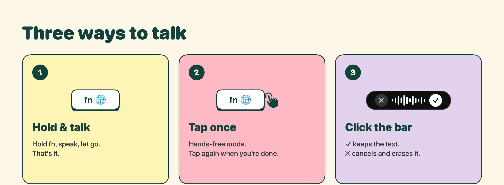
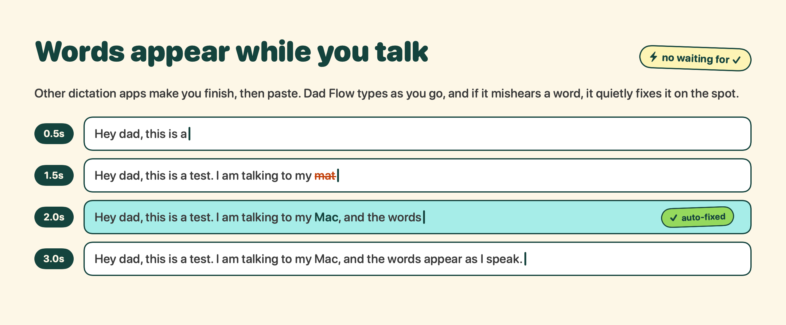
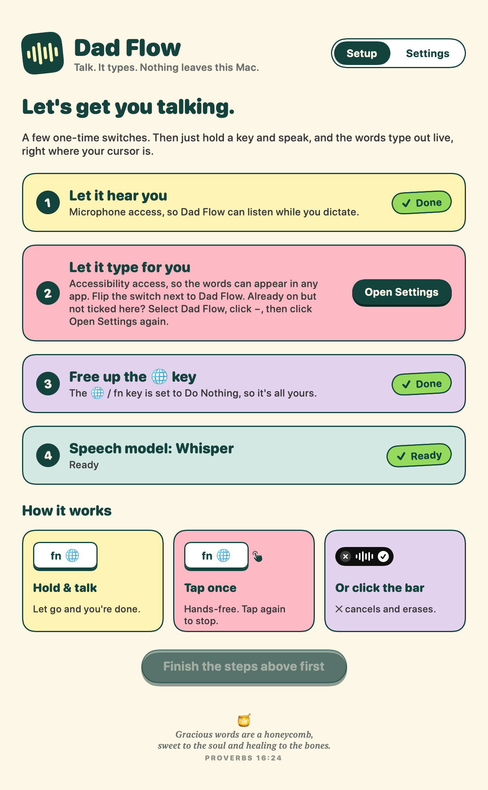
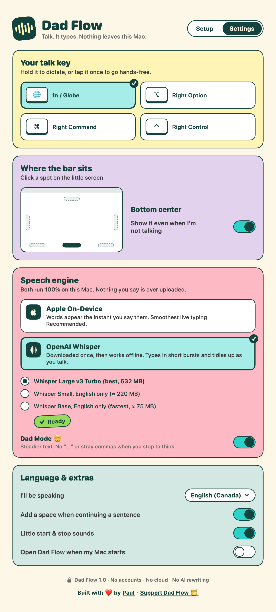
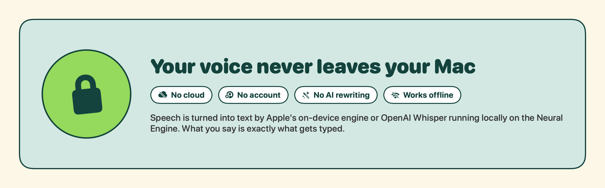

🧔
Made for my dad.
He wanted something like Wispr Flow, but where he could see the words appear as he's saying them. So I built it, and made it free for everyone.
Free voice dictation for your Mac that types while you speak, right where your cursor is. Nothing leaves your Mac.
Download for MacHe wanted something like Wispr Flow, but where he could see the words appear as he's saying them. So I built it, and made it free for everyone.


Words show up in any app as you say them, not after you stop talking.
Your voice never leaves your Mac. No account, no cloud, no tracking.
No AI rewriting your sentences. What you say is what gets typed.
Stop to think without "..." or stray commas popping into your text.
Bottom, top, either side, or a corner. Click it to start talking.
Apple's built-in on-device speech, or OpenAI's Whisper. Both run on your Mac.
A colourful setup screen walks you through each step, one card at a time.


Open DadFlow.dmg and drag Dad Flow into Applications.
The first time, your Mac will say it can't check the developer. Click Done, then go to System Settings → Privacy & Security and click Open Anyway. You only do this once.
Allow the Microphone and Accessibility, and set the 🌐 key to Do Nothing. The app shows you exactly where.
Let go when you're done. That's it.

If Dad Flow saves you some typing and you'd like to say thanks, a sponsorship helps cover the Apple developer fee.